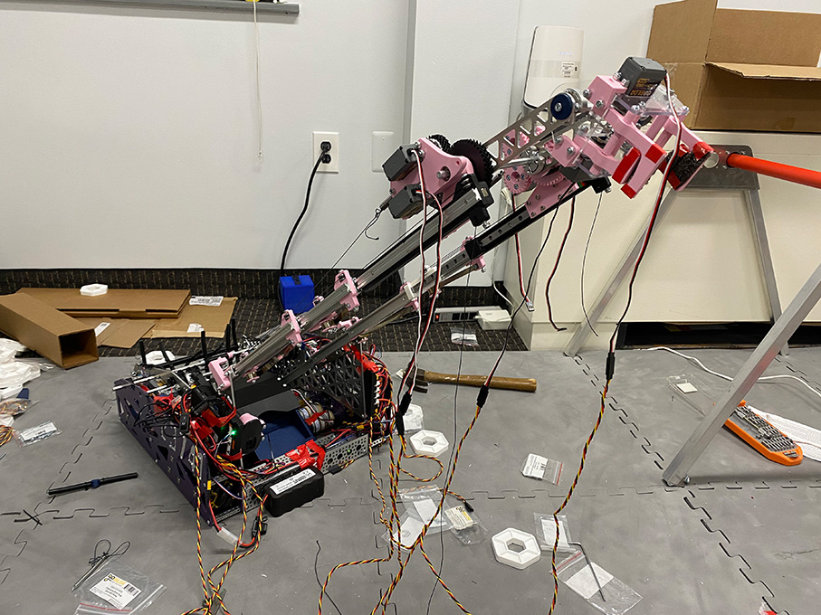
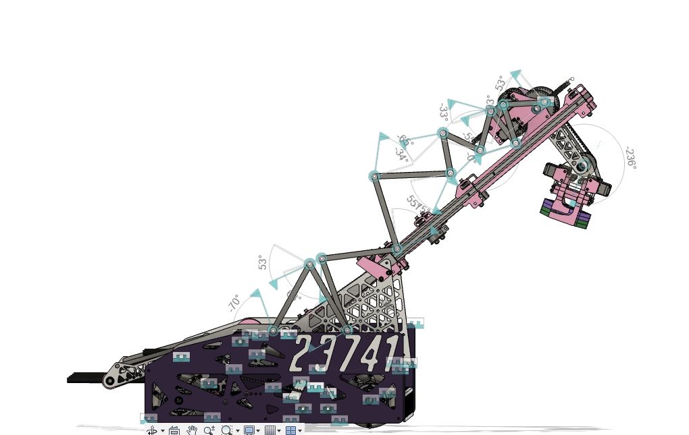

PUSHING
We do not strive for perfection. We seek to push the boundaries; to fundamentally redefine what perfection represents. From outreach to code, from CAD to team spirit, we analyze traditional approaches to refine and refactor our own interpretations.
Everything we do is unique, innovative, and trailblazing.

TODAY'S
We do not strive for perfection. We seek to push the boundaries; to fundamentally redefine what perfection represents. From outreach to code, from CAD to team spirit, we analyze traditional approaches to refine and refactor our own interpretations.
Everything we do is unique, innovative, and trailblazing.